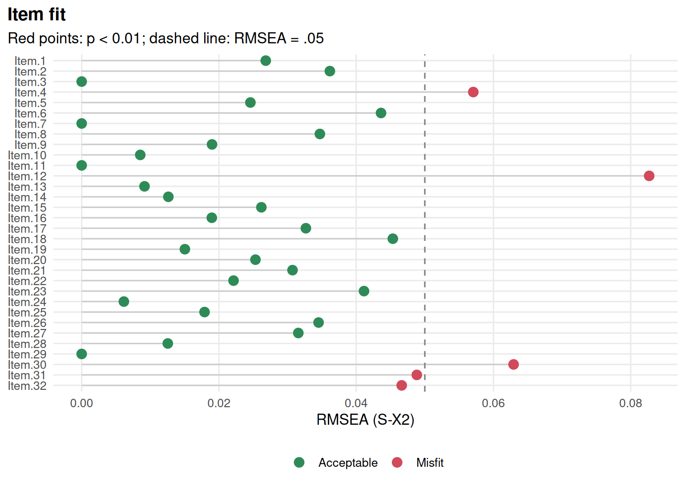
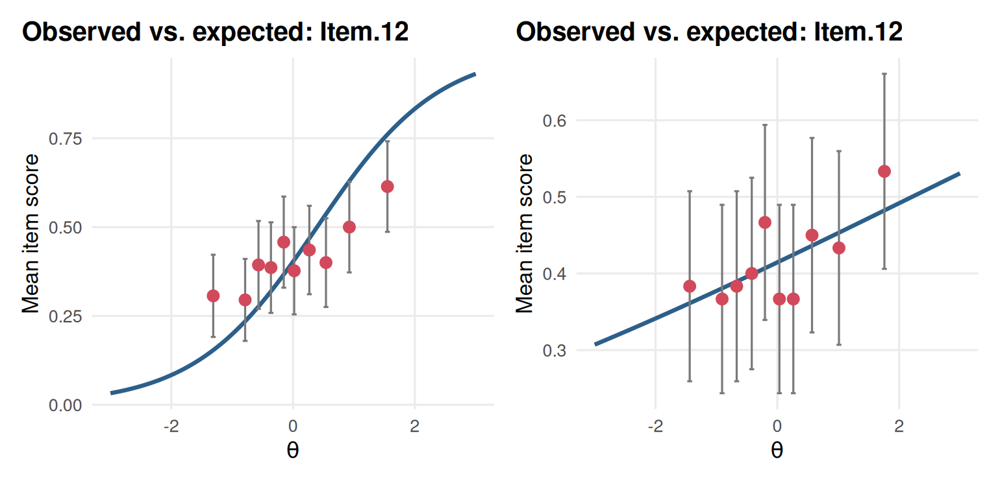
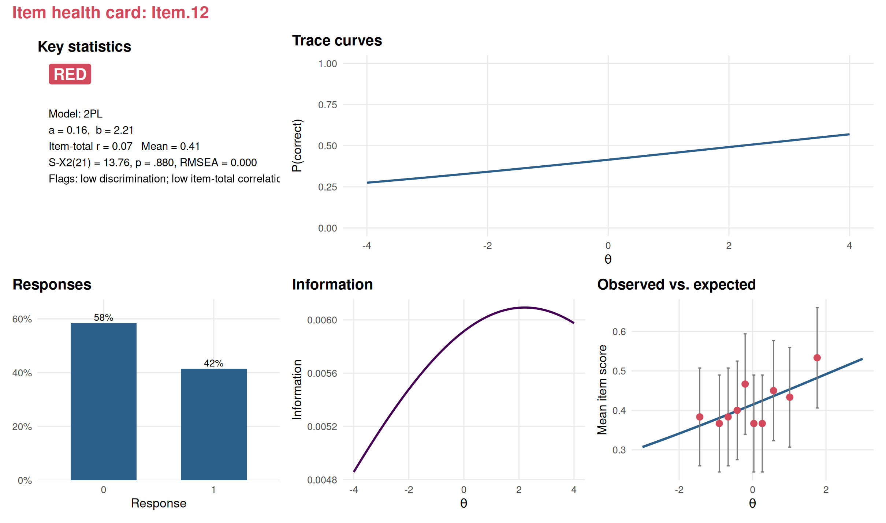
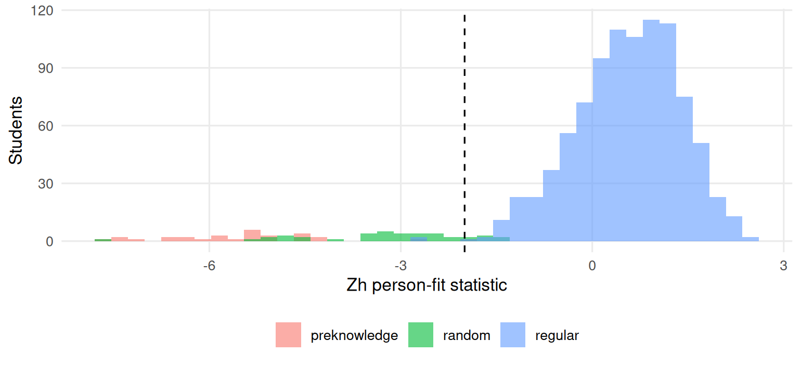
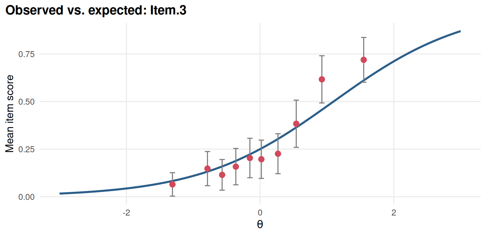

Chapter 5 Item fit, person fit and item quality
Learning goals. After this chapter you can
- explain what item fit means and why it is always fit to a model;
- compute and read the S-X² item-fit statistic and its RMSEA;
- compare an empirical item curve with the model curve;
- flag aberrant response patterns with the Zh person-fit statistic, and say what can cause them;
- summarize an item’s health for a review meeting.
Key terms: item fit, S-X², empirical item curve, person fit, Zh, model fit.
5.1 The ideas
Chapter 3 asked whether a model fits the test as a whole. Item fit asks the same question one item at a time: Does the item’s curve describe how people at different ability levels actually responded?
The most widely used statistic is Orlando and Thissen’s S-X² (Orlando and Thissen 2000). It groups people by their sum score, compares the observed proportion correct in each group with the proportion the model predicts, and adds up the squared differences. A small p-value means the item does not follow the model. Because a test has many items, some will be flagged by chance, so it is good practice to adjust the p-values (for example with the Benjamini-Hochberg method) and to look at an effect size too: mirt reports an RMSEA for each item, where values below about 0.05 mean the misfit is small in practice.
Item fit is always fit to a particular model. An item with an unusually steep curve fits the 2PL perfectly well but misfits the Rasch model, which forces all slopes to be equal. A misfitting item is a question, not a verdict: Look at the empirical curve, the content and the key before you decide.
Person fit turns the question around: Does a person’s response pattern look like what the model expects of someone at their \(\theta\)? The Zh statistic (Drasgow et al. 1985) is a standardized log-likelihood of the pattern. Values near zero are typical; large negative values (below about -2) mean the pattern is unlikely: A strong student who misses easy items, or a weak one who gets the hardest items right. Causes include careless responding, guessing, cheating, misaligned answer sheets, fatigue and atypical instruction. Zh flags a pattern for a closer look; it never proves misconduct.
5.2 Example 1: The same items under two models
We return to the SAT12 science items, scored with the corrected key.
# SAT12 science items, scored with the corrected key (item 32 keyed 3).
key <- c(1,4,5,2,3,1,2,1,3,1,2,4,2,1,5,3,4,4,1,4,3,3,4,1,3,5,1,3,1,5,4,3)
resp <- key2binary(SAT12, key)First, the Rasch model. gg_itemfit() plots each item’s S-X² RMSEA and marks
the items whose p-value is below alpha.

Figure 5.1: S-\(X^2\) RMSEA of each SAT12 item under the Rasch model; flagged items are marked.
item_table() puts the classical statistics, IRT parameters, fit and flags
in one table. Here are the items that misfit the Rasch model most:
tab_r <- item_table(rasch, p_adjust = "BH")
tab_r[order(tab_r$p.value), c("item", "item_total_r", "location", "S_X2", "df",
"RMSEA", "p.value")][1:5, ]
#> # A tibble: 5 × 7
#> item item_total_r location S_X2 df RMSEA p.value
#> <chr> <dbl> <dbl> <dbl> <dbl> <dbl> <dbl>
#> 1 Item.12 0.0685 0.394 91.7 18 0.0827 2.26e-10
#> 2 Item.30 0.157 0.274 60.7 18 0.0629 2.52e- 5
#> 3 Item.4 0.236 0.574 53.1 18 0.0571 2.69e- 4
#> 4 Item.31 0.425 -1.85 41.3 17 0.0488 6.80e- 3
#> 5 Item.32 0.203 0.258 41.4 18 0.0466 8.45e- 3The worst-fitting items include items whose item-total correlation is far from the typical value: Either much flatter or much steeper than the common slope the Rasch model imposes. Now fit the 2PL, which lets the slopes vary:
twopl <- mirt(resp, 1, itemtype = "2PL", verbose = FALSE)
tab_2 <- item_table(twopl, p_adjust = "BH")
c(misfit_rasch = sum(tab_r$p.value < 0.01), misfit_2pl = sum(tab_2$p.value < 0.01))
#> misfit_rasch misfit_2pl
#> 5 0The 2PL removes the misfit. Whether that is the right response depends on the purpose. A Rasch programme would rather revise or drop the items that do not fit, because equal slopes give the sum score its simple meaning; a 2PL programme would keep them.
An empirical item curve shows the misfit directly. People are grouped by their estimated \(\theta\), and the observed proportion correct in each group is plotted against the model curve:
worst <- tab_r$item[which.min(tab_r$p.value)]
gg_empirical(rasch, worst) + gg_empirical(twopl, worst)
Figure 5.2: Empirical item curve of the worst-fitting item under the Rasch model (left) and the 2PL (right).
Under the Rasch model the observed points do not follow the curve; under the
2PL they do. Fit is not the only thing that matters about an item, though.
item_table() also flags items that are very easy or very hard, or that
discriminate poorly:
tab_2[tab_2$flag != "", c("item", "mean", "item_total_r", "discrimination",
"location", "flag")]
#> # A tibble: 7 × 6
#> item mean item_total_r discrimination location flag
#> <chr> <dbl> <dbl> <dbl> <dbl> <chr>
#> 1 Item.9 0.885 0.123 0.518 -4.13 extreme location; low item…
#> 2 Item.11 0.983 0.150 1.69 -3.07 extreme location; low item…
#> 3 Item.12 0.415 0.0685 0.156 2.21 low discrimination; low it…
#> 4 Item.17 0.963 0.199 1.53 -2.71 low item-total correlation
#> 5 Item.21 0.915 0.131 0.600 -4.19 extreme location; low item…
#> 6 Item.30 0.44 0.157 0.383 0.647 low discrimination; low it…
#> 7 Item.32 0.443 0.203 0.490 0.484 low discriminationAn item health card collects everything about one item on a page, with a traffic-light status, for item review meetings:

Figure 5.3: Item health card of the SAT12 item with the lowest discrimination under the 2PL.
item_cards(twopl, file = "cards.html") writes a card for every item into
one HTML page that reviewers can open in a browser.
5.3 Example 2: Finding aberrant response patterns
We simulate a 30-item quiz taken by 1,000 students. Most students respond according to a 2PL model, but 40 answered at random (careless responding) and 30 weak students somehow got the ten hardest items right (perhaps they saw them in advance). We record who is who so we can check the person-fit statistic.
# Simulated 30-item quiz: 930 regular students, 40 random responders and
# 30 weak students who know the 10 hardest items. `type` records which.
set.seed(505)
a <- matrix(rlnorm(30, 0.2, 0.2)); b <- seq(-2, 2, length.out = 30)
resp <- simdata(a, matrix(-a * b), N = 1000, itemtype = "2PL")
colnames(resp) <- sprintf("Q%02d", 1:30)
type <- rep(c("regular", "random", "preknowledge"), c(930, 40, 30))
resp[type == "random", ] <- rbinom(40 * 30, 1, 0.5)
weak <- simdata(a, matrix(-a * b), N = 30, itemtype = "2PL",
Theta = matrix(rnorm(30, -1.2, 0.3)))
weak[, 21:30] <- 1
resp[type == "preknowledge", ] <- weakaugment() adds each person’s score, its standard error and, with
person_fit = TRUE, the Zh statistic to the data:
mod <- mirt(resp, 1, itemtype = "2PL", verbose = FALSE)
scores <- augment(mod, person_fit = TRUE)
scores$type <- type
head(scores[, c(".F1", ".se_F1", ".Zh", "type")])
#> # A tibble: 6 × 4
#> .F1 .se_F1 .Zh type
#> <dbl> <dbl> <dbl> <chr>
#> 1 -1.74 0.472 0.166 regular
#> 2 1.48 0.406 0.970 regular
#> 3 -0.422 0.388 0.809 regular
#> 4 -0.0768 0.376 -0.238 regular
#> 5 1.01 0.380 1.03 regular
#> 6 -0.822 0.407 -0.218 regularHow well does Zh separate the groups?
library(ggplot2)
ggplot(scores, aes(.Zh, fill = type)) +
geom_histogram(bins = 40, position = "identity", alpha = 0.6) +
geom_vline(xintercept = -2, linetype = 2) +
labs(x = "Zh person-fit statistic", y = "Students", fill = NULL) +
theme_mirtverse()
Figure 5.4: Distribution of the Zh person-fit statistic for regular students, random responders and students with pre-knowledge.
aggregate(.Zh < -2 ~ type, data = scores, FUN = mean)
#> type .Zh < -2
#> 1 preknowledge 1.00000
#> 2 random 0.85000
#> 3 regular 0.00323All of the students with pre-knowledge are flagged: Getting the hardest items right while missing easier ones is very unlikely under the model. Most random responders are flagged too, because on a 30-item test with a wide range of difficulties a coin-flip pattern contradicts the model again and again. Only a handful of regular students fall below -2. Real data are rarely this clean: Aberrance is usually milder, and only part of a test may be affected (the last items, say, for a student who ran out of time). That is why Zh is a screening tool: Flagged patterns need a human look, and often other evidence such as response times (see the response-time article).
Do the aberrant patterns distort the item parameters? We can check by refitting without the flagged students and comparing both sets of difficulties for the ten hardest items with the values used to simulate the data:
clean <- mirt(resp[scores$.Zh >= -2, ], 1, itemtype = "2PL", verbose = FALSE)
b_all <- coef(mod, IRTpars = TRUE, simplify = TRUE)$items[21:30, "b"]
b_clean <- coef(clean, IRTpars = TRUE, simplify = TRUE)$items[21:30, "b"]
round(c(error_all = mean(abs(b_all - b[21:30])),
error_clean = mean(abs(b_clean - b[21:30]))), 3)
#> error_all error_clean
#> 0.145 0.140Here the difference is small, because only 7% of the students are aberrant and the model is estimated from everyone else. With more contamination, or with pre-knowledge concentrated on a few items, the damage grows, and removing flagged cases before calibration is common practice.
5.4 Your turn
- Plot the empirical curve of the best-fitting item under the Rasch model in Example 1. How does it compare with the worst-fitting one?
- Rerun
gg_itemfit()for the Rasch model without the p-value adjustment. How many more items are flagged? Which result would you report? - In Example 2, which value of the Zh cut-off flags at most 5% of the regular students? How many students with pre-knowledge does it catch?
- Write two sentences to a school principal explaining what a flagged person-fit statistic means and what it does not mean.
Solutions

Figure 5.5: Empirical item curve of the best-fitting item under the Rasch model.
sum(item_table(rasch)$p.value < 0.01)
#> [1] 8
cut5 <- quantile(scores$.Zh[type == "regular"], 0.05)
c(cutoff = unname(cut5),
caught = mean(scores$.Zh[type == "preknowledge"] < cut5))
#> cutoff caught
#> -0.945 1.000- Without adjustment more items are flagged, some only by chance. With 32 tests, report the adjusted results, and look at the RMSEA to judge size.
- For example: “This student’s pattern of right and wrong answers is unusual for someone with their overall score, so we checked it more closely. It is not evidence of cheating on its own; it can also come from guessing, fatigue or a mismatch between what was taught and what was tested.”